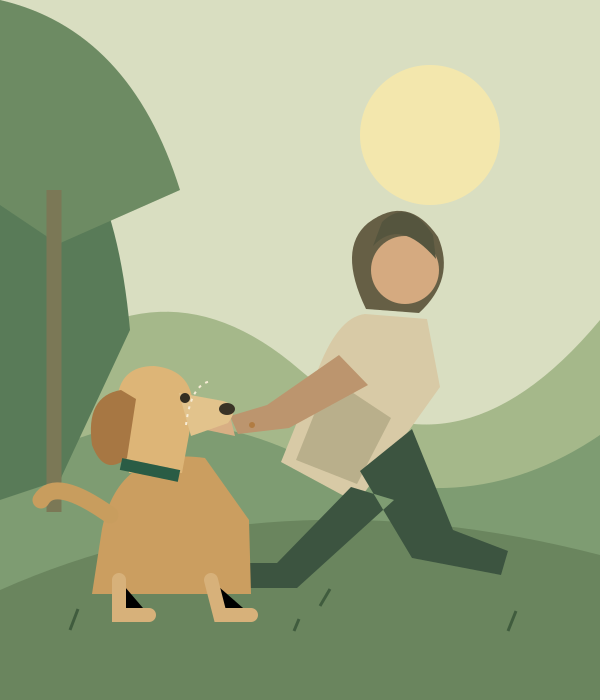

Puppy Foundation
£45 / session12-session concept package: £490
£50 less than 12 individual sessions.
SURREY · REWARD-BASED TRAINING CONCEPT
Work with your dog's nature, not against it.
From boisterous puppies to complex histories,
the starting point is understanding.

PROGRAMS FOR REAL LIFE
No two dogs have the same story.
Start with the stage, then the individual.
A GENTLE START
This guide suggests a conversation, not a diagnosis or training prescription.
OBSERVE / UNDERSTAND / ADAPT
OUR METHOD
Reward-based training builds useful skills by making learning worthwhile. Start with the individual dog's history, environment and comfort, then choose small, achievable steps.
Management and realistic expectations matter. Complex behaviour or sudden changes may need veterinary assessment and an appropriately qualified behaviour professional.
This fictional academy demonstrates an approach, not a credentialed clinical service. No outcome or completion timeline is guaranteed.
THE HUMAN END OF THE LEAD
Good Boy Academy's fictional founder is built around a simple belief: a dog struggling with something needs understanding, not a “bad dog” label.
The goal is a better relationship — skills you can practise together and a plan that fits everyday life.
“Understanding is a good place to start.”
No real portrait, qualifications, association membership, client count or professional history is asserted.
ONE STEP AT A TIME
Assessment: talk about history, triggers and what a useful first step could be.
STRAIGHTFORWARD STARTING POINTS
12-session concept package: £490
£50 less than 12 individual sessions.
8-session concept package: £399
£41 less than 8 individual sessions.
2-hour assessment: £150
Individual scope and follow-up to agree.
All fees illustrative, not offers. Travel and suitability need confirmation. No unlimited-support or guaranteed-result promise.
GOT QUESTIONS?
At a suitable home or outdoor setting, agreed according to individual needs. This concept has no bookable facility.
Progress varies with health, environment, training history and practice. Agree realistic goals and review them rather than relying on a fixed timeline.
Previous experiences can inform a fresh assessment and a suitable plan.
Breed tendencies can inform the conversation; individual needs and safe suitability still require assessment.
Seek an appropriately qualified reward-based professional and veterinary advice where needed. Keep safe distances and avoid pushing the dog into overwhelming situations.
LET'S UNDERSTAND YOUR DOG
Prepare a sample assessment enquiry.
No delivery, reservation or payment.